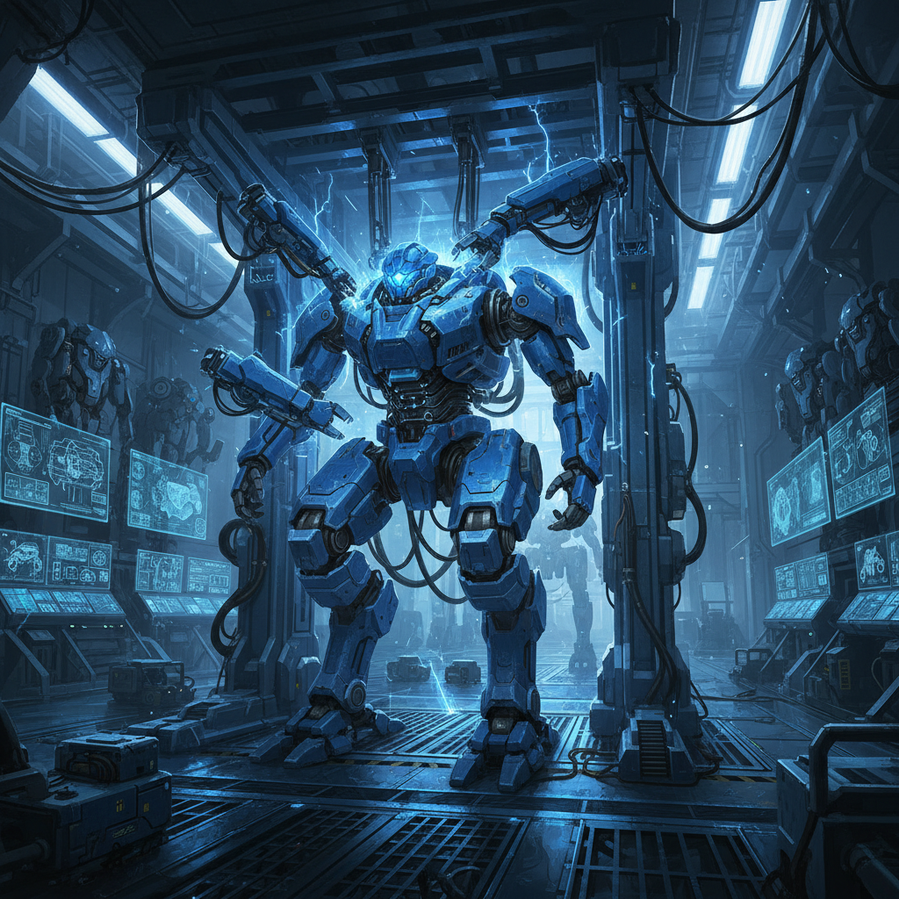
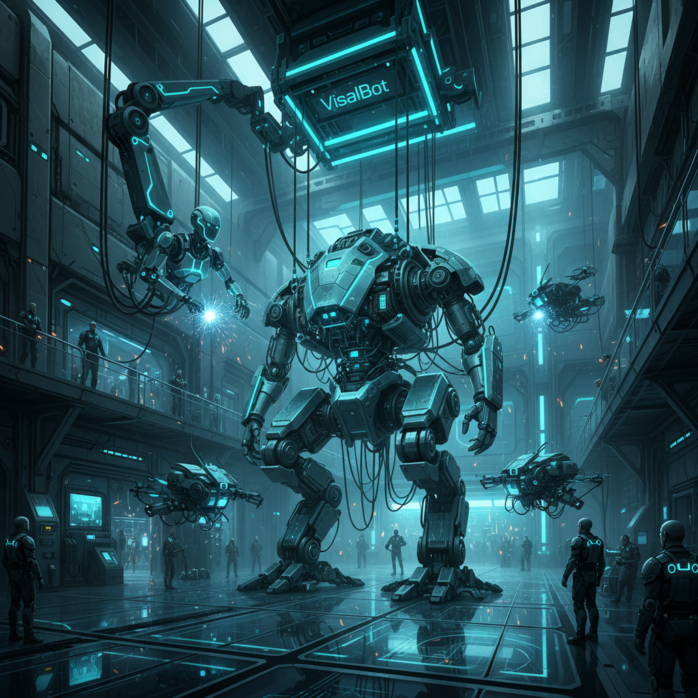
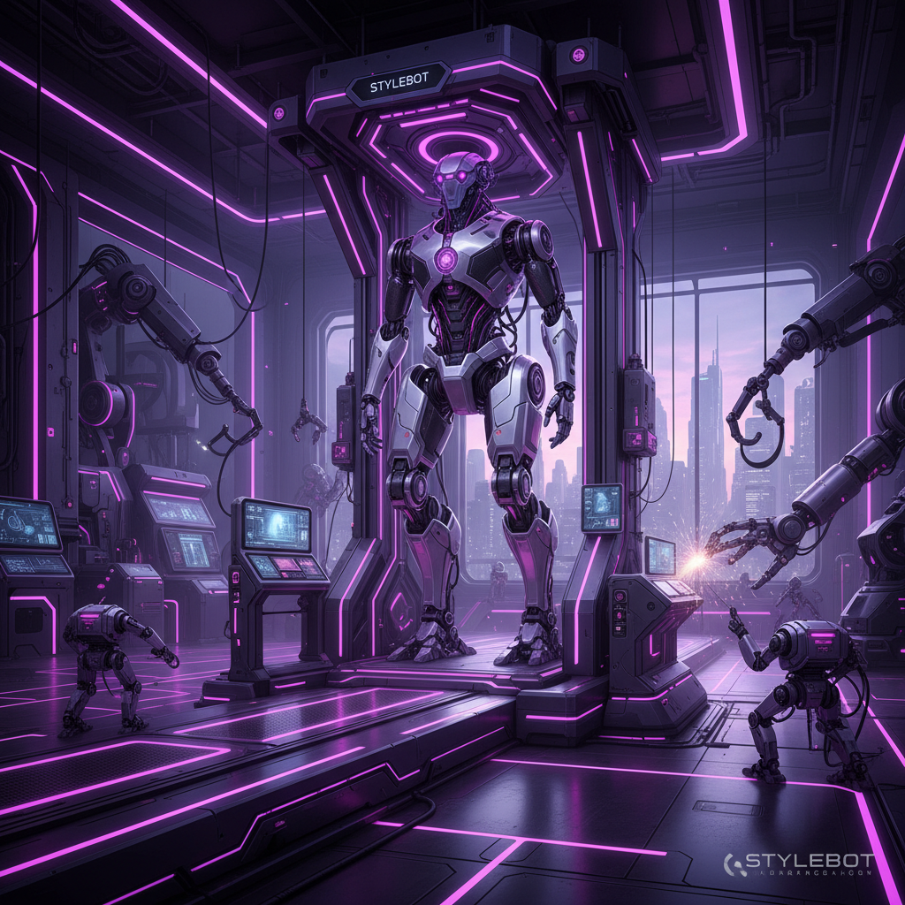

Saber · Operator Core
Saber sets mission scope, creates the first-pass architecture, coordinates relay timing, verifies completion, and ships the artifact as a coherent whole.
Final QA and integration by Saber. This stage confirms structure, visuals, readability, and narrative alignment across all three agents.

Saber sets mission scope, creates the first-pass architecture, coordinates relay timing, verifies completion, and ships the artifact as a coherent whole.

ImageBot transforms conceptual intent into clear visual anchors, raising emotional impact and making each panel immediately legible and memorable.

StyleBot refines hierarchy and rhythm, ensuring premium readability, smoother visual flow, and consistent cross-device presentation quality.